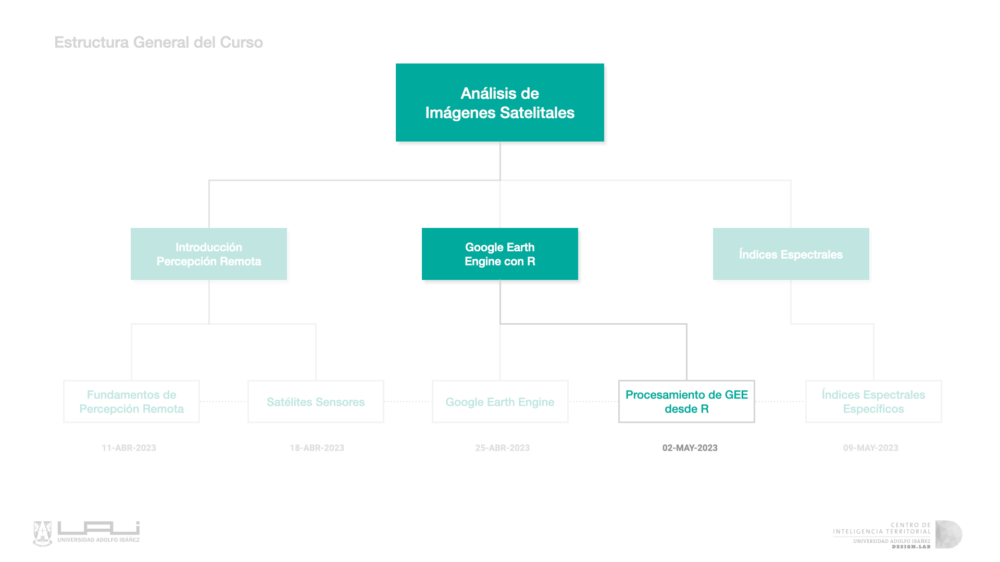
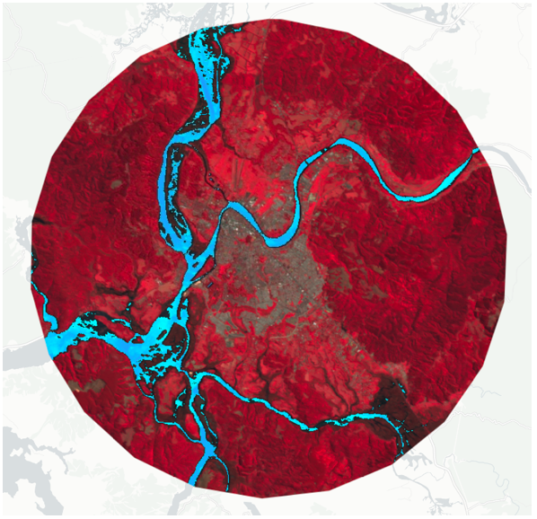
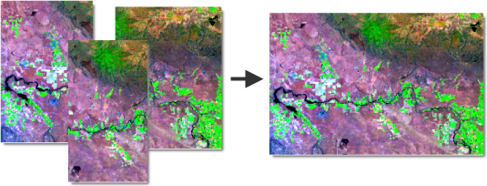

6 S4: Procesamiento con GEE desde R
Google Earth Engine

En esta sección, exploraremos el procesamiento de imágenes satelitales y otros datos geoespaciales con Google Earth Engine (GEE) y R. Al utilizar GEE, podremos acceder a una amplia variedad de recursos satelitales y climáticos que nos serán útiles en nuestros análisis. También aprenderemos a crear nuevos índices normalizados para obtener información precisa y detallada sobre los cambios en la superficie terrestre. Por otro lado, R es un lenguaje de programación popular y flexible que nos permitirá realizar análisis avanzados de datos geoespaciales de manera eficiente y efectiva. La combinación de estas dos herramientas nos permitirá realizar análisis complejos y obtener resultados valiosos que nos ayudarán a comprender mejor nuestro entorno.
6.1 Índice de Diferencia Normalizada de Agua (NDWI)
El índice de Diferencia Normalizada de Agua (NDWI) es un índice que se utiliza en percepción remota para identificar cuerpos de agua y humedad en la superficie de la tierra. Este índice es especialmente útil cuando se utiliza con imágenes satelitales de Landsat, ya que utiliza bandas espectrales específicas para detectar la presencia de agua.

El índice NDWI se calcula como (NIR - SWIR) / (NIR + SWIR), donde NIR es la banda del infrarrojo cercano y SWIR es la banda del infrarrojo de onda corta. La razón detrás de este cálculo es que el agua absorbe más radiación en la banda del infrarrojo cercano y refleja menos radiación en la banda del infrarrojo de onda corta, en comparación con otros objetos en la superficie terrestre. Por lo tanto, los cuerpos de agua y la humedad en la superficie de la tierra tendrán un valor NDWI más alto que otros objetos en la imagen.
El índice NDWI es especialmente útil para la detección de cuerpos de agua y humedad en áreas como los bosques y los cultivos, lo que puede ser importante para la comprensión de la salud del ecosistema y la evaluación de la disponibilidad de agua para los cultivos.
Dependiendo de la extensión del área de estudio o la disponibilidad de imágenes de calidad (que hayan pasado filtros), a veces es necesario construir un mosaico que es una combinación o fusión de dos o más imágenes.

6.2 Modelo Digital de Elevación
Un Modelo Digital de Elevación (MDE) es un conjunto de datos que representa la elevación de la superficie terrestre en una región en particular. Los datos del MDE se utilizan comúnmente en percepción remota para la creación de mapas topográficos y la identificación de características geográficas, como montañas, valles y cuerpos de agua.
Los MDE se crean mediante la recopilación de datos de elevación a través de diversas técnicas, como la fotogrametría, el LiDAR y la interferometría de radar. Los datos resultantes se procesan para crear un modelo tridimensional de la superficie terrestre que se puede utilizar para análisis y visualizaciones. Los MDE son una herramienta esencial en la percepción remota y se utilizan en una variedad de aplicaciones, desde la gestión de recursos naturales hasta la planificación urbana y la navegación.
- DSM:
- El Modelo Digital de Superficie representa las elevaciones sobre el nivel del mar de las superficies reflectantes de árboles, edificios y otras características elevadas sobre la “Tierra desnuda”.
- AVE:
- Elevation value calculated by average. Valor de elevación calculado mediante el re-muestreo promedio de un modelo de grilla de 5 metros.
- Aspect:
- La orientación puede pensarse como la dirección de la pendiente Slope (pendiente): La pendiente representa la inclinación de la superficie.